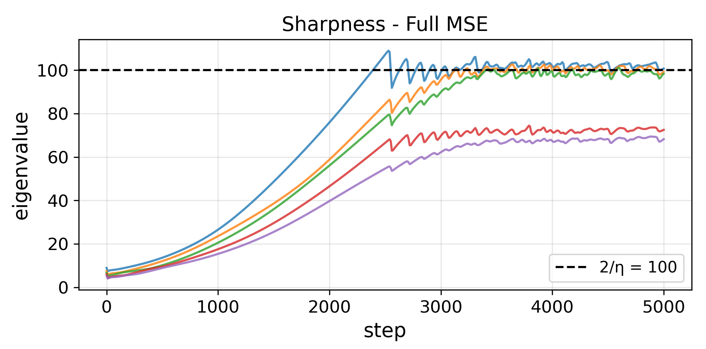

Work on self-stabilization derived equations that accurately model edge-of-stability (EOS) sharpness oscillations from a third-order Taylor expansion of the loss around a stable reference point. We analyze these equations to understand why EOS oscillations almost always decay in magnitude.
The equations can be analyzed in simplified form via 5 assumptions:
Under these assumptions, you can show oscillation amplitude $x$ and sharpness offset $y$ evolve under
$$\frac{dx}{dt} = x\,y, \qquad \frac{dy}{dt} = \alpha - \beta\frac{x^2}{2}.$$This system is equivalent exactly to a particle in a 1D potential well, $w'' = -V'(w)$ with $V(w) = \alpha\big(\tfrac12(e^{2w}-1) - w\big)$ and $w = \log(X/\delta)$. The energy $E = \tfrac12(w')^2 + V(w)$ is conserved, so the orbits are stable and the oscillations never change amplitude. That cannot explain the decay.
We systematically relax the assumptions to find which one is responsible.
Mathematically, we can show that the only assumption that leads to strong decay is the $\nabla S$ null-space condition. In general we have no reason to suspect $\nabla S$ lies in the null space of the Hessian. Thus this explains why we see decay in practice.
We show this empirically below. Training a neural network on a Chebyshev polynomial or on CIFAR10 results in EOS oscillations, that are well predicted by the self-stability equations. We apply several assumptions to the self-stability equations: empirically, rotation and $\nabla S\cdot u$ are negligible. But enforcing $\nabla S$ in the null-space leads to large discrepancies, with oscillations of growing amplitude (this can be proven directly from the equations as well).
Below, the black curve is real gradient descent and the red curve is the full self stability equations. Each checkbox allows us to view the effect of applying a single assumption to the equations.
This suggests a minimal model for oscillation decay as follows:
$$\frac{dx}{dt} = x\,y, \qquad \frac{dy}{dt} = \alpha - \lambda y - \beta\frac{x^2}{2}.$$where $\lambda$ corresponds to the eigenvalue of the direction $\nabla S$. We assume here that $\nabla S$ is an eigenvector: in general, it lies along many eigenvectors and the true equations are high-dimensional. But as a minimal model, this sufficies to reproduce the qualitative oscillation decay behaviour.
Below, we compare real data with a simplified model with only one or two eigenvalues. We also display the values of coefficients alpha and beta from a real trajectory
Mathematically one can show this minimal model with $\nabla S$ lying along a noznero eigenvalue, is equivalent to adding a drag to the 1d particle in a 1d potential. Thus energy is lost and the system eventually reaches a steady state.